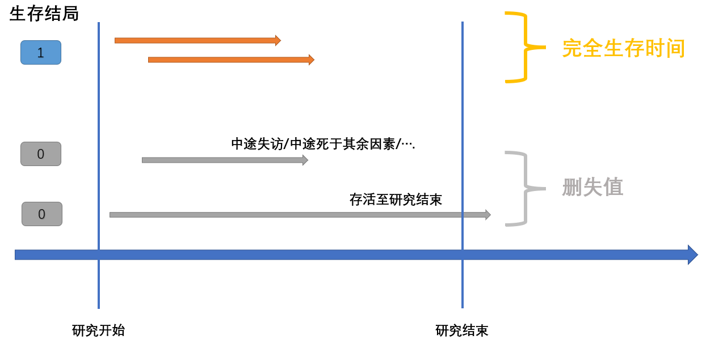
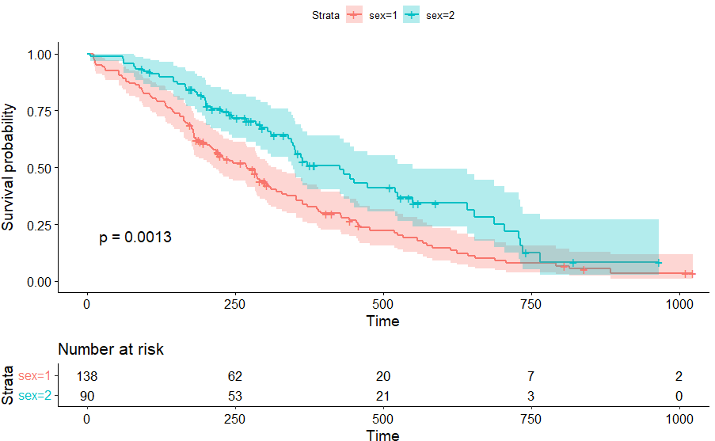
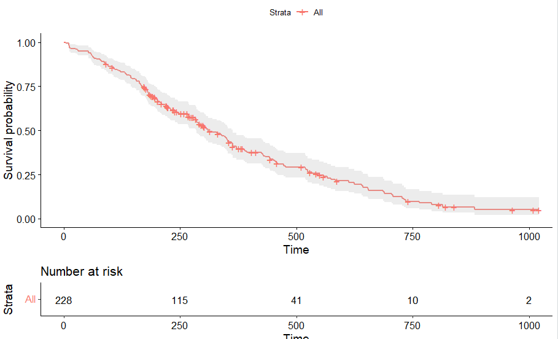
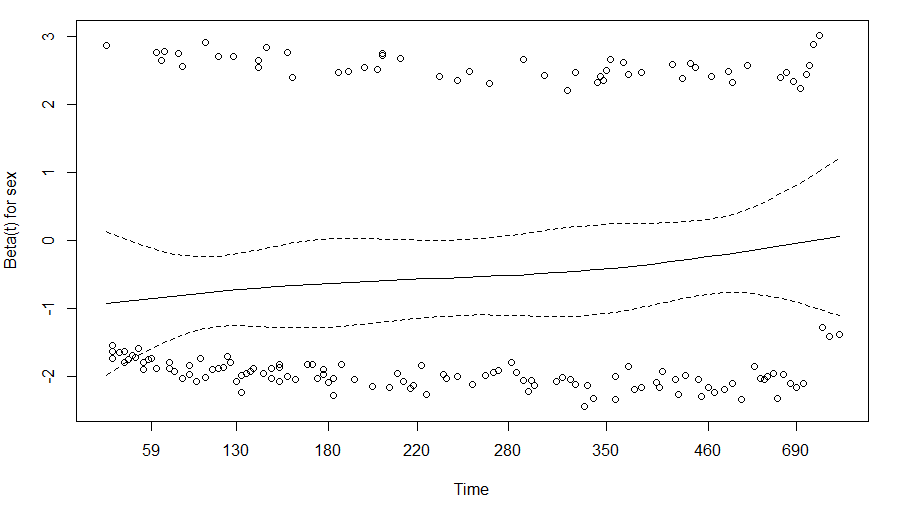

Survival
生存分析：研究因素与生存结局（阳性结局）在时间跨度上的关联
| 数据组成 | |
|---|---|
| 分组信息 | e.g.A型血，B型血，O型血，AB型血 |
| 生存结局 | 研究者设定某种阳性事件（e.g.死亡）。研究进行的时间跨度中，若事件发生则结局为1，若未发生则结局为0 |
| 生存时间 | 从随访至阳性事件所经历的时间。可分为完全生存时间与非完全生存时间（又称截尾值/删失值，censord value） |

| 分析手段 | |
|---|---|
| 描述生存过程 | K-M曲线 |
| 生存/风险曲线是否有差异 | LogRank(Mantel-Haenszel): 各时间点权重一样，对远期差异敏感 Gehan Wilcoxon(Breslow): 以各时间点的观察例数为权重，对早期差异敏感 Tarone-Ware: 以各时间点的观察例数的平方根为权重 详细link,根据事件时间分布、删失分布、曲线是否交叉 来决定方式与看待结果 |
| 寻找风险因素 | Cox 回归模型 |
| 术语 | ||
|---|---|---|
| 生存函数 | $$S(t)=P(T>t)$$ | 个体的生存时间大于t的概率 |
| (ti时刻生存概率) | $$S(t_i)=S(t_{i-1})(1-\frac{d_i}{n_i})=exp[-\int_{0}^{t}h(u)du]$$ | d_i:在ti死亡的数目 n_i: ti之前存活且非数据删失的数目 |
| 风险函数 $\lambda$ | $$h(t)=\lim\limits_{\Delta t\rightarrow0}\frac{P(t\leq T<t |T\geq t)}{\Delta t}=-\frac{dS(t)/dt}{S(t)}$$ | 个体生存到t时刻，单位时间内事件发生的rate |
| Cox 模型 | $$h(t)=h_0(t)*\exp(b_1x_1+b_2x_2+...+b_px_p)$$ | $b>0增加h(t)，b=0于h(t)无影响，b<0减小h(t)$ |
| Hazard Ratio | $$\frac{h_0(t)*\exp(b_1(x_1+1)+b_2x_2+...+b_px_p)}{h(t)}$$ | 若x_1增加一个单位，增加前后的风险对比，详见 |
R示例
Data
lung数据集，数据详情及下载见链接。
setwd('C:\\Users\\12990\\Desktop\\s')
library("survival")
library("survminer")
lung <-read.csv("dataset-68740.csv",head=T,check.names=F)
Fit
Surv()创建一个生存对象,随后survfit()创建一个分析图
Surv(time,event)
## time: time
## event: 阳性事件发生的状态
如下写法数值一致
> survfit(Surv(lung$time,lung$status==2) ~ lung$sex)
Call: survfit(formula = Surv(lung$time, lung$status == 2) ~ lung$sex)
n events median 0.95LCL 0.95UCL
lung$sex=1 138 112 270 212 310
lung$sex=2 90 53 426 348 550
> survfit(Surv(time,status==2) ~ sex , data = lung)
Call: survfit(formula = Surv(time, status == 2) ~ sex, data = lung)
n events median 0.95LCL 0.95UCL
sex=1 138 112 270 212 310
sex=2 90 53 426 348 550
n: 样本数
events: 阳性事件发生数
median: 中位生存率对应的生存时间
0.95LCL: 置信区间下限
0.95UCL: 置信区间上限
K-M
KM_sex <- survfit(Surv(time,status==2) ~ sex , data = lung)
p1 = ggsurvplot(KM_sex,
pval = TRUE,
ggtheme = theme_bw(),
conf.int = TRUE,
risk.table = TRUE,
fun="event")
## "event" plots cumulative events (f(y) = 1-y),
## "cumhaz" plots the cumulative hazard function (f(y) = -log(y)),
## "pct" for survival probability in percentage.
## arrange_ggsurvplots(list(p1,p2,p3))

KM_all <- survfit(Surv(time,status==2) ~ 1 , data = lung)
ggsurvplot(KM_all,pval = TRUE, conf.int = TRUE,risk.table = TRUE)
#plot(KM_all,conf.int=T,col=c("red"),xlab="Days",ylab = "Survival probability")
#legend(0,0.5,legend=c("All"),lty=1,col=c("red"))

> summary(KM_all)
Call: survfit(formula = Surv(time, status == 2) ~ 1, data = lung)
time n.risk n.event survival std.err lower 95% CI upper 95% CI
5 228 1 0.9956 0.00438 0.9871 1.000
11 227 3 0.9825 0.00869 0.9656 1.000
12 224 1 0.9781 0.00970 0.9592 0.997
13 223 2 0.9693 0.01142 0.9472 0.992
15 221 1 0.9649 0.01219 0.9413 0.989
26 220 1 0.9605 0.01290 0.9356 0.986
......
log-rank test
- 参考: With default rho = 0 this is the log-rank or Mantel-Haenszel test, and with rho = 1 it is equivalent to the Peto & Peto modification of the Gehan-Wilcoxon test
surv_diff <- survdiff(Surv(time, status) ~ sex, data = lung, rho = 0)
p.val = surv_diff$pvalue
> surv_diff
Call:
survdiff(formula = Surv(time, status) ~ sex, data = lung)
N Observed Expected (O-E)^2/E (O-E)^2/V
sex=1 138 112 91.6 4.55 10.3
sex=2 90 53 73.4 5.68 10.3
Chisq= 10.3 on 1 degrees of freedom, p= 0.001
COX
- 基于风险比模型，评估不同变量对生存率的影响；Cox模型和log-rank test都要求风险等比例（PH假定，Assumptions,pre-test），若否，可尝试RMST、分层、时依协变量、等方法
- 在进行多元回归前，如果因子太多，可以使用survdiff分组检验先选出显著的因子。
- 除了Cox模型外,还要一些拟合其它分布的模型，例如指数、Weibull、Gompertz分布
单因素
单因素拟合Cox比例风险回归模型。风险比率exp(coef)=0.5880，说明女性（2）死亡风险是男性（1）的0.5880倍。
cox_sex <- coxph(Surv(time,status==2) ~ sex , data = lung)
> cox_sex
Call:
coxph(formula = Surv(time, status == 2) ~ sex, data = lung)
coef exp(coef) se(coef) z p
sex -0.5310 0.5880 0.1672 -3.176 0.00149
Likelihood ratio test=10.63 on 1 df, p=0.001111
n= 228, number of events= 165
多因素
cox_2 <- coxph(Surv(time,status==2) ~ sex +age, data = lung)
> summary(cox_2)
Call:
coxph(formula = Surv(time, status == 2) ~ sex + age, data = lung)
n= 228, number of events= 165
coef exp(coef) se(coef) z Pr(>|z|)
sex -0.513219 0.598566 0.167458 -3.065 0.00218 **
age 0.017045 1.017191 0.009223 1.848 0.06459 .
---
Signif. codes: 0 ‘***’ 0.001 ‘**’ 0.01 ‘*’ 0.05 ‘.’ 0.1 ‘ ’ 1
exp(coef) exp(-coef) lower .95 upper .95
sex 0.5986 1.6707 0.4311 0.8311
age 1.0172 0.9831 0.9990 1.0357
Concordance= 0.603 (se = 0.025 )
Likelihood ratio test= 14.12 on 2 df, p=9e-04
Wald test = 13.47 on 2 df, p=0.001
Score (logrank) test = 13.72 on 2 df, p=0.001
分层
加strata()按age分层计算，减少age造成的扰动
Call:
coxph(formula = Surv(time, status == 2) ~ sex + strata(age),
data = lung)
coef exp(coef) se(coef) z p
sex -0.6447 0.5248 0.2120 -3.041 0.00236
Likelihood ratio test=9.79 on 1 df, p=0.001756
n= 228, number of events= 165
Hazard Ratio
> summary(cox_sex)$coef[2]
[1] 0.5880028
PH假定
H0假设：风险比不会随时间而变化。p>0.05,不能拒绝H0。
如果风险比伴随时间变化(p<=0.05)，方程中可加入类似'var*time'的变换。
## 图形法检验PH假定
plot(cox.zph(cox_2,transform=rank),var='sex')
> cox.zph(cox_2,transform=rank)
chisq df p
sex 2.378 1 0.12
age 0.137 1 0.71
GLOBAL 2.475 2 0.29

Predict
使用COX模型预测生存时间（待确认）
fit <- survreg(Surv(time, status) ~ ph.ecog, data=lung)
pred <- <- predict(fit, newdata=data.frame(ph.ecog=2), type='quantile',p=pct, se=TRUE)
模型检验: C-index
预测模型的评价指标一般需要考虑：区分能力（ROC），一致性（goodness-of-fit/C-index），其它例如回归模型的 MSE、R2等。对 COX 回归模型的评价一般使用 C-index，上述代码的结果中已经提供 summary(cox_2)$concordance （不确定是那种C-index？待确认）
此外还可以使用 Hmisc 包进行计算 Harrell’s C
library(survival)
library(Hmisc)
fit <- survdiff(Surv(time, status) ~ sex, data = lung, rho = 0)
pred <- predict(fit)
HarrellC <- 1-rcorr.cens(pred,Surv(time,status))
C-index 的计算过程是：将所有样本两两组合，预测其生存时间；若一对样本的label显示S1的生存时间长于S2，预测值也符合这一关系，则这一对样本归为“Concordance”；最终，C-index = Concordance_pairs/all_pairs
RR,OR,HR
| -- | 发生 Risk=1 | 未发生 Risk=0 |
|---|---|---|
| 暴露组 Exposure=1 | a | b |
| 非暴露组 Exposure=0 | c | d |
- Relative Risk: 暴露组Risk率/非暴露组Risk率 （发病/死亡率）
RR = P(Risk=1|Exposure=1) / P(Risk=1|Exposure=0)
= [a/(a+b)] / [c/(c+d)]
- Odd Ratio: Risk组(暴露_非暴露)比值/非Risk组(暴露_非暴露)比值
OR = [a/c] / [b/d]
- Hazard Ratio: 考虑了时间因素的RR
HR 见 上文
可以将log(OR)作为GWAS分析的表型，寻找可能的致病位点
参考
Survival-R: https://zhuanlan.zhihu.com/p/130316068
Survival: http://thisis.yorven.site/blog/index.php/2020/04/06/survival-analysis/
ggsurvplot：https://zhuanlan.zhihu.com/p/113676828
Survival: https://zhuanlan.zhihu.com/p/497968260
KM: https://zhuanlan.zhihu.com/p/391474891
检验：http://www.lcgdbzz.org/custom/news/id/9442
RR,OR,HR：https://blog.csdn.net/weixin_41858481/article/details/95773773
C-index 5种方法: https://blog.csdn.net/weixin_41368414/article/details/123660946
C-index: https://blog.csdn.net/fjsd155/article/details/84669331